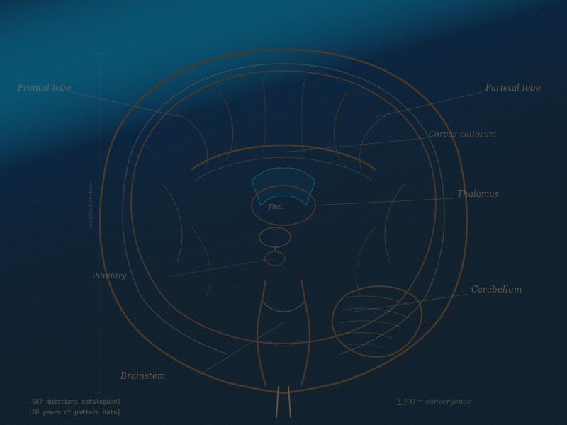
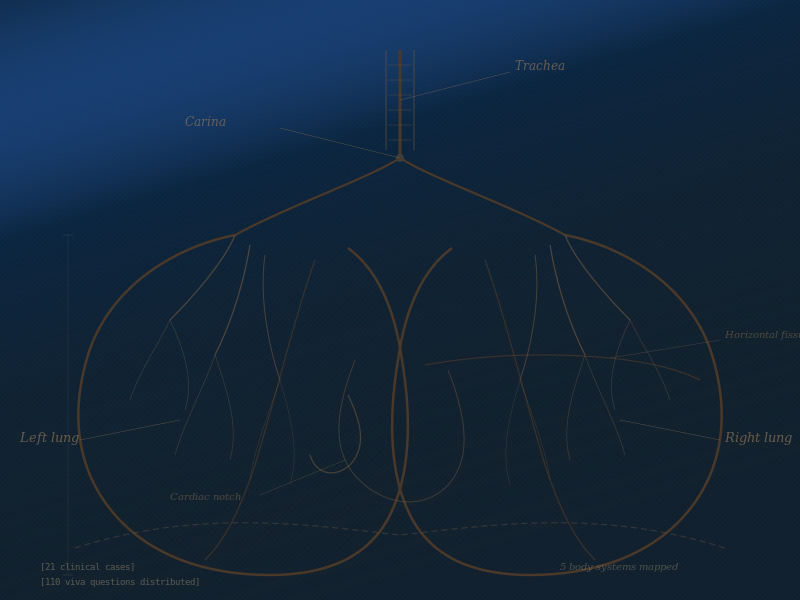
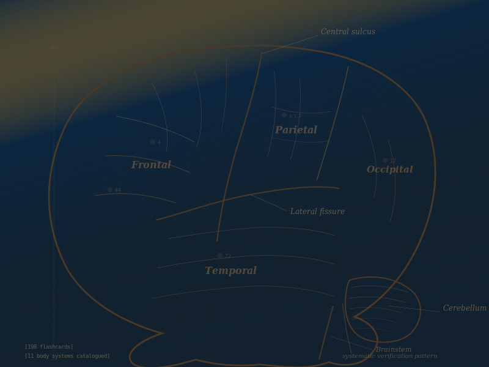

We catalogued every MD Internal Medicine question asked over 20 years and discovered the structural patterns examiners follow. The result is a preparation strategy built on evidence, not guesswork.
Try the Predictor — Free[987_QUESTIONS_CATALOGUED] · [20_YEARS_STRUCTURAL_ANALYSIS] · [44_TOPICS_RANKED]
Each topic earns its rank through frequency analysis, recency weighting, cross-paper signals, and clinical relevance scoring. The algorithm surfaces what matters most.
[14_reason_codes] · [knowledge_graph_boost] · [portfolio_quota_enforcement]The engine doesn’t guess. It counts, compares, and scores.
Maps each question to the exam’s hidden slot structure — the framework examiners build every paper around.
[topic_dictionary: 1718_entries] · [77.4%_match_rate]
Scored across frequency, recency, cross-paper presence, and clinical relevance. More signals = higher confidence.
[14_reason_codes] · [kg_boost_active]
Topics ranked by evidence strength. Each includes a rationale so you understand exactly why it matters.
[38_of_44_pass] · [portfolio_quota_enforced]
Each tool is standalone. Pick what you need right now.

[20_years_of_pattern_data]Upload past papers and get a ranked list of what matters most — built on convergence patterns validated across 20 years.

[21_clinical_cases]Clinical cases, viva questions, stress-mode timers. Everything for bedside examination — organized by system.

[198_flashcards]198 flashcards across 11 body systems. Browse by topic, filter by difficulty, or quiz yourself with shuffle mode.